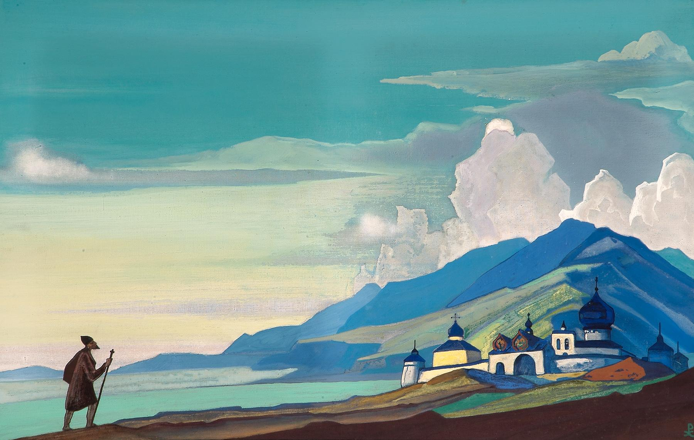
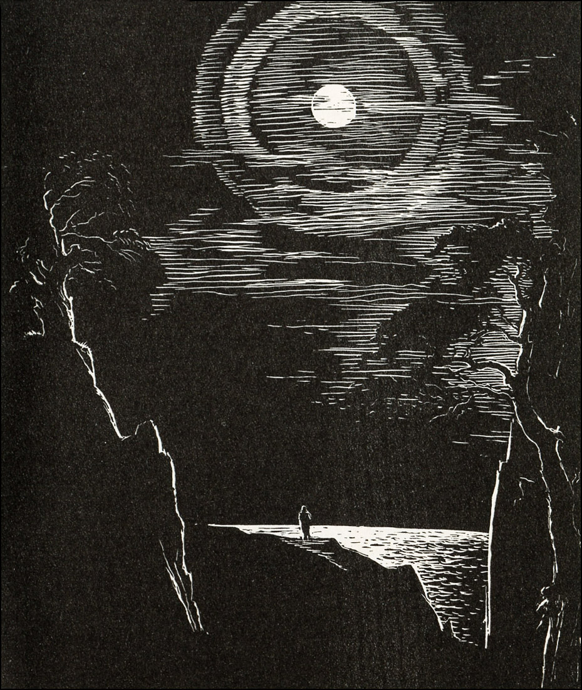

Подорож — переміщення якоюсь певною територією з метою її вивчення, а також із загальноосвітньою,
пізнавальною,
спортивною цілями.
До XVIII—XIX ст. подорожі були одним з основних джерел інформації про ті чи інші країни (їхні природу,
населення, історію, господарство), загальний характер та рельєф поверхні Землі. Від античного часу
збереглися
описи подорожей Геродота, вчених, які супроводжували Олександра Македонського в його походах. Класичний
приклад
подорожей Середньовіччя — походи Марко Поло й Афанасія Нікітіна.
Подорожі з релігійними цілями (для поклоніння святим місцям) в Середньовіччі отримали назву
«паломництво»;
російські паломники, серед яких, наприклад, ігумен Даніїл, залишили подорожні записки, що отримали назву
«ходіння». Епоха географічних великих відкриттів характерна багатьма подорожами, що докорінно змінили
уявлення
про планету.
Пізніше велике значення для розширення знань про Землю мали мандрівки Д. Лівінгстона і Г. Стенлі, М. М.
Пржевальського та інших. М. М.Пржевальський називав свої мандри науковими, тому що вони могли
задовольнити
лише
запити первинного і загального ознайомлення з особливостями тієї чи іншої території. Тому вже в
XVIII—XIX
ст., в
міру поглиблення досліджень, конкретизації та спеціалізації навчальних цілей і завдань, подорожі
набувають
характеру навчальних експедицій (Арміній Вамбері).
Із середини XX ст., у зв'язку з бурхливим розвитком туризму, термін «подорожувати» вживають для
означення
будь-якої поїздки, зробленої якоюсь мірою самостійно, незалежно від туристичної компанії. Нині
мандрівниками
називають людей, що влаштовують самостійно поїздки, часто авантюрні (наприклад, Ф. Ф. Конюхов, В. А.
Шанін,
І.
П. Синицин). Подорож з принциповою відмовою від послуг туристичної компанії називається «бекпекінг»
Веб-сайт платформи для планування подорожей вітає вас!
Історична довідка.

Думки про подорожі видатних людей
- «Життя під час подорожі - це мрія в чистому вигляді.» - Агата Крісті
- «Лише про дві речі ми шкодуватимемо на смертному одрі - що мало любили і мало подорожували.» - Марк Твен
- «Людина, яка багато подорожує, схожа на камінь, пронесений водою на сотні верст: його шорсткості згладжуються, і все в ньому набуває м'яких, заокруглених форм.» - І. Реклю
- «Людину роблять щасливими три речі: любов, цікава робота і можливість подорожувати.» - І. Бунін
- «Світ - це книга. І хто не подорожував по ньому - прочитав у ній лише одну сторінку.» - Св. Августин
- «Доброчесність мудреців нагадує подорож у далеку країну або сходження на вершину: ті, що йдуть у далеку країну, починають свій шлях із першого кроку; ті, що сходять на вершину, починають з підніжжя гори.» - Конфуцій
- «Все життя - це лише шлях до смерті.» - Сенека
- «Настане і той час, коли космічний корабель з людьми покине Землю і вирушить у подорож. Надійний міст із Землі в космос уже перекинуто запуском радянських штучних супутників, і дорога до зірок відкрита!» - Сергій Корольов
- «Якщо англійський сплін має хоч родинну схожість з нашою російською нудьгою, то я вірю в можливість подорожі пішки на Камчатку, як це зробив якийсь лорд, що до того ще й одружився з дочкою петропавловського паламаря.» - Тарас Шевченко
- «Товсте дерево починалося з тонкого прутика. Дев'ятиповерхова вежа почалася з кладки маленьких цеглин. Подорож у тисячу верст починається з одного кроку. Будьте уважні до своїх думок - вони є початком вчинків.» - Лев Толстой
- «Щоб жити, треба рватися, плутатися, битися, помилятися, починати і знову починати, і знову кидати, і вічно боротися. А спокій - це душевна боязкість.» - Лев Толстой
Вірш «Сам-один виходжу на дорогу»

Сам-один виходжу на дорогу,
У тумані битий шлях блищить;
Тиха ніч. Пустеля чує бога,
І зоря з зорею гомонить.
Як прекрасні небеса безкраї!
Спить земля у сяйві голубім...
То чому ж душа моя страждає?
Жду чогось? Шкодую я за чим?
Від життя нічого не чекаю,
Не шкода минулого мені,
Я свободи й спокою шукаю,
Я б хотів забутися у сні.
Та не тим холодним сном могили...
Я би так хотів спочити в сні,
Щоб не згасли життєдайні сили.
Щоби вільно дихалось мені.
Щоб вночі і вдень щонаймиліший
Про любов я чув солодкий спів,
Щоби, наді мною нахилившись,
Дуб зелений листям шелестів.
Михайло Лермонтов
У тумані битий шлях блищить;
Тиха ніч. Пустеля чує бога,
І зоря з зорею гомонить.
Як прекрасні небеса безкраї!
Спить земля у сяйві голубім...
То чому ж душа моя страждає?
Жду чогось? Шкодую я за чим?
Від життя нічого не чекаю,
Не шкода минулого мені,
Я свободи й спокою шукаю,
Я б хотів забутися у сні.
Та не тим холодним сном могили...
Я би так хотів спочити в сні,
Щоб не згасли життєдайні сили.
Щоби вільно дихалось мені.
Щоб вночі і вдень щонаймиліший
Про любов я чув солодкий спів,
Щоби, наді мною нахилившись,
Дуб зелений листям шелестів.
Михайло Лермонтов